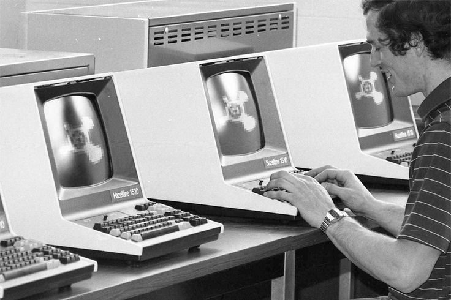
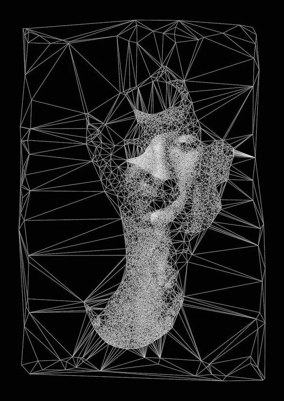

История развития
1960-е: Первые алгоритмы распознавания простых геометрических форм
1980-е: Появление промышленных систем контроля качества
1990-е: Массовое внедрение сканеров штрих-кодов
2010-е: Революция глубокого обучения (AlexNet, ResNet)
2020-е: Трансформеры в компьютерном зрении (ViT, DETR)
Основные принципы
- Получение изображения: Камеры, датчики, медицинские сканеры
- Предварительная обработка:
- Фильтрация шумов (гауссовский, медианный фильтры)
- Коррекция освещения (гистограммная эквализация)
- Бинаризация (метод Оцу)
- Выделение признаков:
- SIFT/SURF для ключевых точек
- HOG для обнаружения объектов
- Глубокие нейросети (автоматическое выделение признаков)
- Анализ и интерпретация:
- Классификация (ResNet, EfficientNet)
- Детекция (YOLO, Faster R-CNN)
- Сегментация (U-Net, Mask R-CNN)
Ключевые алгоритмы
Классические методы
- Метод Виолы-Джонса: Обнаружение лиц
- Алгоритм Canny: Выделение границ
- Оптический поток Лукаса-Канаде: Отслеживание движения
Глубокое обучение
- YOLOv8: Обнаружение объектов в реальном времени
- Segment Anything (SAM): Универсальная сегментация
- Vision Transformers: Классификация изображений
Техническая реализация
Оборудование
- Камеры: RGB, глубины (Intel RealSense), тепловизоры
- Вычислительные модули: NVIDIA Jetson, Intel Neural Compute Stick
- Облачные платформы: Google Vision AI, AWS Rekognition
Программные инструменты
OpenCV
Библиотека компьютерного зрения с 2500+ алгоритмов
PyTorch
Фреймворк для глубокого обучения
TensorFlow Lite
Оптимизированные модели для мобильных устройств
Процесс разработки
- Сбор и разметка данных (LabelImg, CVAT)
- Обучение модели (Google Colab, локальный сервер)
- Оптимизация (квантование, pruning)
- Развертывание (Docker, ONNX Runtime)